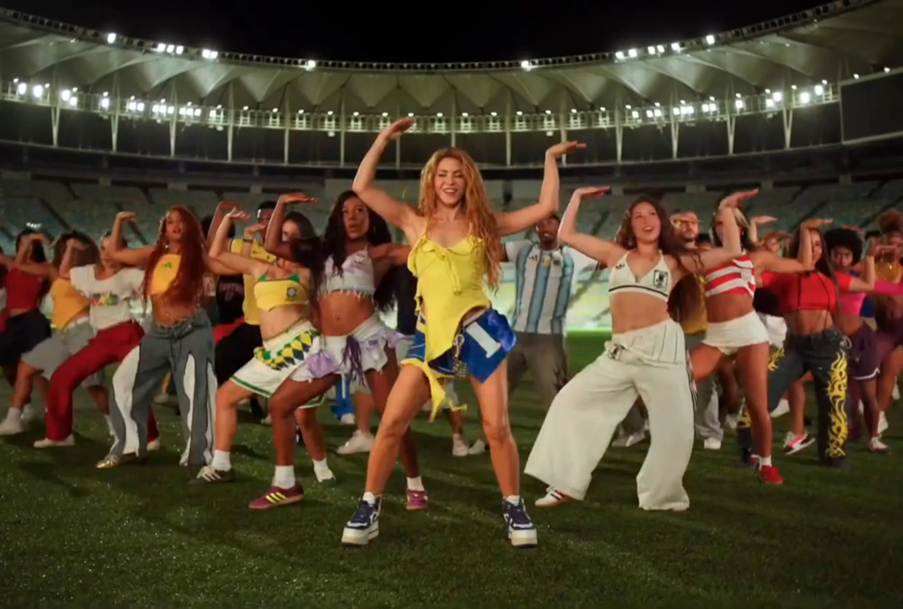

As notícias mais quentes do entretenimento brasileiro · 13 de junho de 2026 · Ir para BuzzPop

Crédito: Foto: css' href='https://altonivel.com.mx/wp-content/plugins/media public/css/media-credit.min.css?ver=4.3.0' media='all' />
A presença de Shakira na abertura da Copa 2026 virou assunto após fãs levantarem dúvidas sobre a aparência da cantora durante o show.
A aparição de Shakira na abertura da Copa 2026 virou assunto entre fãs. A presença da cantora, associada a “Dai Dai”, chamou atenção e gerou dúvidas sobre se era mesmo Shakira no palco durante o show ligado à Copa do Mundo.
As manchetes convergem ao apontar que a aparência da artista levantou suspeitas e intrigou o público na internet. Entre as dúvidas citadas, está a possibilidade de uso de dublê na apresentação.
ID de aprovação: J0RhaSBEYWknLi4uIG1h
Fontes: O Globo / R7 / CNN Brasil / Estadão / VEJA
Link principal: O Globo
Crédito da imagem: Foto: css' href='https://altonivel.com.mx/wp-content/plugins/media public/css/media-credit.min.css?ver=4.3.0' media='all' />
Origem da imagem: Imagem ilustrativa aprovada por revisao visual e escolhida fora das fontes da noticia.
A morte de David Hockney, aos 88 anos, foi destaque em diferentes manchetes, acompanhada de análises sobre sua obra e de uma retrospectiva de sua carreira.
David Hockney morreu aos 88 anos. O pintor também foi identificado como britânico em uma das manchetes reunidas sobre o caso.
As publicações ainda destacam análises sobre sua obra, incluindo as piscinas que pintou e a ternura em sua arte, além de uma retrospectiva sobre sua carreira.
ID de aprovação: w41jb25lIGRhIGFydGUg
Fontes: CNN Brasil / Folha de S.Paulo / Assine Abril / Valor Econômico / Estadão
Link principal: CNN Brasil
Crédito da imagem: Imagem pendente de revisão
Origem da imagem: Nenhuma candidata foi aprovada pela revisao visual automatica.
Sugestões de filmes para o Dia dos Namorados incluem romances, títulos em cartaz, relançamentos e opções para ver em casa ou fugir da data.
O Dia dos Namorados aparece como tema de diferentes listas de filmes. Entre elas, há uma seleção com 12 filmes românticos para assistir na data e outra com produções românticas em cartaz nos cinemas de São Paulo.
As sugestões também incluem clássicos do romance com relançamento especial nos cinemas. Em paralelo, há uma lista com cinco filmes voltados a solteiros que querem fugir da data e outra com cinco opções para quem vai passar o Dia dos Namorados em casa.
ID de aprovação: MTIgZmlsbWVzIHJvbcOi
Fontes: Capricho / Guia Folha / G1 / Estadão / Folha Vitória
Link principal: Capricho
Crédito da imagem: Imagem pendente de revisão
Origem da imagem: Nenhuma candidata foi aprovada pela revisao visual automatica.
Luciana Andrade falou sobre bastidores, saída do Rouge e rumores sobre sua trajetória. Karin Hils se pronunciou depois.
Ex-cantoras do Rouge trocaram farpas às vésperas de um documentário sobre o grupo. No contexto da discussão, aparece a frase "Não sou mentirosa".
Luciana Andrade falou sobre bastidores do Rouge, sua saída do grupo e rumores sobre sua trajetória. Depois, Karin Hils se pronunciou sobre o desabafo.
ID de aprovação: w4BzIHbDqXNwZXJhcyBk
Fontes: Notícias da TV / OFuxico / POPline / R7 Entretenimento / gente.ig.com.br
Link principal: Notícias da TV
Crédito da imagem: Imagem pendente de revisão
Origem da imagem: Nenhuma candidata foi aprovada pela revisao visual automatica.
Manchetes sobre Deolane Bezerra destacam a prisão e citam itens e direitos ligados à rotina dela no presídio.
Deolane Bezerra aparece nas manchetes em contexto de prisão. Os títulos tratam da rotina dela na cadeia e citam TV, maquiagem, chapinha e visita íntima.
As manchetes também mencionam o presídio onde ela está presa. Entre os pontos citados nos títulos estão falta de higiene, comida estragada e escorpiões.
ID de aprovação: VFYsIG1hcXVpYWdlbSwg
Fontes: Portal Leo Dias / G1 / UOL Notícias / Estadão / Midiamax
Link principal: Portal Leo Dias
Crédito da imagem: Imagem pendente de revisão
Origem da imagem: Nenhuma candidata foi aprovada pela revisao visual automatica.
Atriz comentou a parceria com Isabelle Drummond em 'Coração Acelerado' e falou sobre o destino da vilã da trama.
Leandra Leal falou sobre a parceria com Isabelle Drummond em 'Coração Acelerado' e também tratou de um novo filme da Globo.
Sobre a vilã de 'Coração Acelerado', Leandra Leal afirmou que a personagem deve receber castigo e ter um final triste na trama. Ela também disse que a vilã não vai acabar rica.
ID de aprovação: TGVhbmRyYSBMZWFsIGZh
Fontes: O Globo / Notícias da TV / CARAS Brasil / O TEMPO / NSC Total
Link principal: O Globo
Crédito da imagem: Imagem pendente de revisão
Origem da imagem: Nenhuma candidata foi aprovada pela revisao visual automatica.
Graciele Lacerda comentou a cirurgia feita pela filha Clara, de um ano, para retirar um nódulo do rosto. Ela também revelou o resultado da biópsia do material retirado.
Graciele Lacerda comentou a cirurgia feita pela filha Clara, de um ano, para retirar um nódulo do rosto. Ao falar sobre o procedimento, ela chorou.
Depois, Graciele revelou o resultado da biópsia do nódulo retirado. Zezé Di Camargo também mostrou a bebê após a cirurgia no rosto.
ID de aprovação: R3JhY2llbGUgY2hvcmEg
Fontes: CNN Brasil / Globo.com / Estadão / R7 Entretenimento / OFuxico
Link principal: CNN Brasil
Crédito da imagem: Imagem pendente de revisão
Origem da imagem: Nenhuma candidata foi aprovada pela revisao visual automatica.
Nilson Klava, apontado em manchetes como o "crush" da Copa, é casado com a filha de jornalistas ligados à Globo. A cerimônia de casamento é associada ao Cristo Redentor em mais de uma chamada.
Nilson Klava aparece nas manchetes sobre a Copa e é descrito como o "crush" do torneio. As chamadas também apontam que ele é casado.
Outro ponto recorrente é que Nilson Klava é casado com a filha de jornalistas ligados à Globo. Mais de uma manchete também associa o casamento ao Cristo Redentor.
ID de aprovação: UmVww7NydGVyICdjcnVz
Fontes: Extra online / UOL / Jornal Correio / Boca do Rio Magazine / Terra
Link principal: Extra online
Crédito da imagem: Imagem pendente de revisão
Origem da imagem: Nenhuma candidata foi aprovada pela revisao visual automatica.
Cantor disse que está com candidíase nas cordas vocais, explicou o tratamento e detalhou o impacto do problema em sua voz.
Diogo Nogueira relatou estar com candidíase nas cordas vocais e explicou o tratamento para a condição. O cantor também atualizou seu estado de saúde e revelou detalhes do problema que afetou sua voz.
O caso ganhou atenção após a voz de Diogo Nogueira chamar atenção no programa “Encontro”. Ele também falou sobre o uso de um aparelho para conseguir cantar durante esse período.
ID de aprovação: J0NhbmRpZMOtYXNlJyBu
Fontes: O Globo / VEJA / OFuxico / Revista Fórum / Observatório dos Famosos
Link principal: O Globo
Crédito da imagem: Imagem pendente de revisão
Origem da imagem: Nenhuma candidata foi aprovada pela revisao visual automatica.
Apresentadora do SBT News reclamou da equipe durante o jornal ao vivo após um problema técnico no teleprompter.
Uma âncora do SBT News reclamou da equipe durante o jornal ao vivo após um problema técnico. As manchetes descrevem a situação como um perrengue no ar, com irritação da apresentadora.
O ponto em comum entre os relatos é que a bronca aconteceu durante a transmissão e veio depois de uma falha no teleprompter.
ID de aprovação: w4JuY29yYSBkbyBTQlQg
Fontes: Notícias da TV / NaTelinha / RD1 / Metropolitana / bnews.com.br
Link principal: Notícias da TV
Crédito da imagem: Imagem pendente de revisão
Origem da imagem: Nenhuma candidata foi aprovada pela revisao visual automatica.
Adriana recupera a fortuna, sai da cadeia e ganha um novo amor em "Quem Ama Cuida". Heitor é ligado à maior virada da personagem, enquanto a 2ª fase terá um novo galã e cinco personagens com impacto na trama.
Em "Quem Ama Cuida", Adriana recupera a fortuna. A personagem também sai da cadeia, despacha Pedro e ganha um novo amor.
Heitor é citado como responsável pela maior virada ligada a Adriana. A 2ª fase da novela ainda terá um novo galã para disputar o amor da personagem, além de cinco personagens apontados como mudanças para a trama.
ID de aprovação: Tm92YSBmYXNlOiBWZWph
Fontes: Observatório da TV / Notícias da TV / CNN Brasil / O TEMPO / RD1
Link principal: Observatório da TV
Crédito da imagem: Imagem pendente de revisão
Origem da imagem: Nenhuma candidata foi aprovada pela revisao visual automatica.
Cantora negou acusações de traição e afirmou que adotará medidas judiciais após rumores envolvendo seu nome.
Ana Castela negou acusações de traição e anunciou que tomará medidas judiciais após ter seu nome ligado a rumores sobre um suposto envolvimento com Zé Felipe antes do fim de seu relacionamento com Mioto.
A equipe de Ana Castela também se pronunciou depois que os rumores vieram à tona. Entre os pontos em comum das informações reunidas estão a negativa da cantora sobre as traições e a decisão de adotar providências judiciais contra o jornalista citado no caso.
ID de aprovação: QW5hIENhc3RlbGEgbmVn
Fontes: UOL / Notícias da TV / Midiamax / ACidade ON / Rádio Itatiaia
Link principal: UOL
Crédito da imagem: Imagem pendente de revisão
Origem da imagem: Nenhuma candidata foi aprovada pela revisao visual automatica.
Zizi Possi saiu em defesa de Luiza Possi após a filha anunciar sua carreira gospel e rebateu ataques dirigidos à cantora.
Zizi Possi defendeu Luiza Possi após a filha anunciar sua carreira gospel. A cantora também rebateu ataques dirigidos a Luiza nesse contexto.
Em uma das falas destacadas nas manchetes, Zizi mandou um recado aos críticos de Luiza Possi com a frase “Vai arranjar o que fazer”. As chamadas também associam a manifestação de Zizi à mudança religiosa anunciada pela filha.
ID de aprovação: IlZhaSBhcnJhbmphciBv
Fontes: Diário do Centro do Mundo / NaTelinha / Estadão / Gshow / Correio Braziliense
Link principal: Diário do Centro do Mundo
Crédito da imagem: Imagem pendente de revisão
Origem da imagem: Nenhuma candidata foi aprovada pela revisao visual automatica.
Giulia Costa afirmou que Flávia Alessandra aplicou um castigo após uma mentira e o descreveu como pior do que ficar sem celular.
Giulia Costa revelou um castigo aplicado por Flávia Alessandra após contar uma mentira. Nas manchetes, o método é tratado como um castigo inusitado usado pela atriz com a filha.
A própria descrição destacada nas chamadas afirma que a punição foi “pior do que ficar sem celular”. Em uma das versões, Giulia Costa compara o castigo a ficar um mês sem celular.
ID de aprovação: R2l1bGlhIENvc3RhIHJl
Fontes: Hugo Gloss / UOL / Globo / Portal Tela / bnews.com.br
Link principal: Hugo Gloss
Crédito da imagem: Imagem pendente de revisão
Origem da imagem: Nenhuma candidata foi aprovada pela revisao visual automatica.
Olivia Rodrigo lançou um novo álbum, descrito nas manchetes como um trabalho mais maduro, ligado a amor fracassado, paixões e intoxicações de um amor.
Olivia Rodrigo lançou um novo álbum e também o clipe de "stupid song". Nas manchetes, o disco é apresentado como um trabalho mais maduro da cantora.
O álbum aparece associado a amor fracassado, às intoxicações de um amor e à paixão como uma montanha-russa. Outra manchete destaca a passagem do new wave para cantar esse tema no disco.
ID de aprovação: Q29tbyBPbGl2aWEgUm9k
Fontes: Folha de S.Paulo / Globo / Omelete / Capricho
Link principal: Folha de S.Paulo
Crédito da imagem: Imagem pendente de revisão
Origem da imagem: Nenhuma candidata foi aprovada pela revisao visual automatica.
Na estreia da Copa, o Canadá empatou com a Bósnia e conquistou seu primeiro ponto na história do torneio. Alphonso Davies começou a partida como reserva.
O Canadá empatou com a Bósnia na estreia da Copa do Mundo e somou o primeiro ponto de sua história no torneio. As manchetes também tratam o país como anfitrião da competição.
Alphonso Davies, apontado como astro da seleção canadense, começou a partida no banco de reservas.
ID de aprovação: UG9yIHF1ZSBBbHBob25z
Fontes: CNN Brasil / UOL / ESPN Brasil / CBN
Link principal: CNN Brasil
Crédito da imagem: Imagem pendente de revisão
Origem da imagem: Nenhuma candidata foi aprovada pela revisao visual automatica.
Vivão virou tema de avaliação por sua atuação como Patrão, enquanto a dinâmica do programa também teve disputa na esteira e resultado de vice-liderança.
Vivão foi colocado em avaliação por sua atuação como Patrão na Casa do Patrão. O público considera que ele sabonetou no comando da dinâmica. No programa, os participantes também enfrentaram um desafio na esteira em uma disputa pelo cargo de Patrão.
Além disso, Vivão avaliou o desempenho dos concorrentes no Trampo da Casa do Patrão. A atração ainda conseguiu vitória contra o Ratinho e ficou na vice-liderança.
ID de aprovação: UXVhbCBhdmFsaWHDp8Oj
Fontes: R7 / Notícias da TV / O Universo da TV / TV RECORD EUROPA
Link principal: R7
Crédito da imagem: Imagem pendente de revisão
Origem da imagem: Nenhuma candidata foi aprovada pela revisao visual automatica.